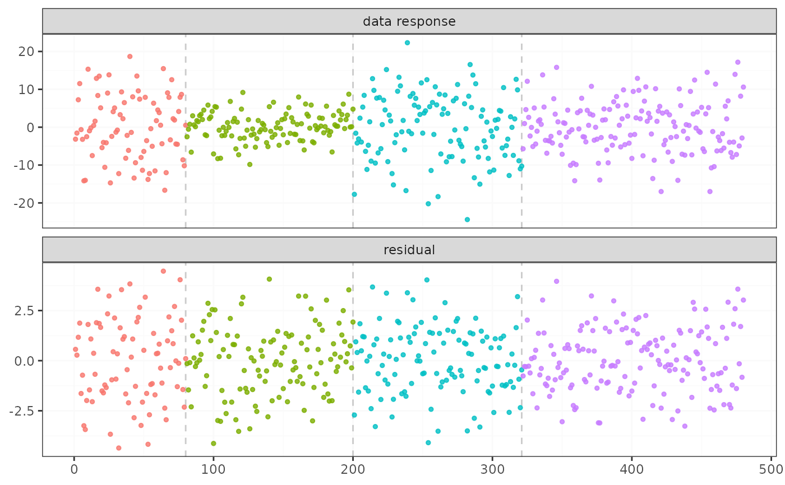
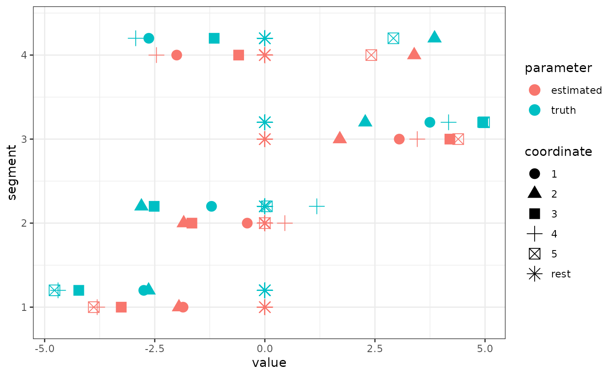

Find change points efficiently in penalized linear regression models
Source:R/fastcpd_wrappers.R
fastcpd_lasso.Rdfastcpd_lasso() and fastcpd.lasso() are wrapper
functions of fastcpd() to find change points in penalized
linear regression models. The function is similar to fastcpd()
except that the data is by default a matrix or data frame with the response
variable as the first column and thus a formula is not required here.
Arguments
- data
A matrix or a data frame with the response variable as the first column.
- ...
Other arguments passed to
fastcpd(), for example,segment_count.
Value
A fastcpd object.
Examples
# \donttest{
if (
requireNamespace("dplyr", quietly = TRUE) &&
requireNamespace("ggplot2", quietly = TRUE) &&
requireNamespace("mvtnorm", quietly = TRUE) &&
requireNamespace("reshape2", quietly = TRUE)
) {
set.seed(1)
n <- 480
p_true <- 5
p <- 50
x <- mvtnorm::rmvnorm(n, rep(0, p), diag(p))
theta_0 <- rbind(
runif(p_true, -5, -2),
runif(p_true, -3, 3),
runif(p_true, 2, 5),
runif(p_true, -5, 5)
)
theta_0 <- cbind(theta_0, matrix(0, ncol = p - p_true, nrow = 4))
y <- c(
x[1:80, ] %*% theta_0[1, ] + rnorm(80, 0, 1),
x[81:200, ] %*% theta_0[2, ] + rnorm(120, 0, 1),
x[201:320, ] %*% theta_0[3, ] + rnorm(120, 0, 1),
x[321:n, ] %*% theta_0[4, ] + rnorm(160, 0, 1)
)
result <- fastcpd.lasso(
cbind(y, x),
multiple_epochs = function(segment_length) if (segment_length < 30) 1 else 0
)
summary(result)
plot(result)
thetas <- result@thetas
thetas <- cbind.data.frame(thetas, t(theta_0))
names(thetas) <- c(
"segment 1", "segment 2", "segment 3", "segment 4",
"segment 1 truth", "segment 2 truth", "segment 3 truth", "segment 4 truth"
)
thetas$coordinate <- c(seq_len(p_true), rep("rest", p - p_true))
molten <- reshape2::melt(thetas, id.vars = "coordinate")
molten <- dplyr::mutate(
molten,
segment = gsub("segment ", "", variable),
segment = gsub(" truth", "", segment),
height = as.numeric(gsub("segment.*", "", segment)) +
0.2 * as.numeric(grepl("truth", variable)),
parameter = ifelse(grepl("truth", variable), "truth", "estimated")
)
ggplot2::ggplot() +
ggplot2::geom_point(
data = molten,
ggplot2::aes(
x = value, y = height, shape = coordinate, color = parameter
),
size = 4
) +
ggplot2::ylim(0.8, 4.4) +
ggplot2::ylab("segment") +
ggplot2::theme_bw()
}
#>
#> Call:
#> fastcpd.lasso(data = cbind(y, x), multiple_epochs = function(segment_length) if (segment_length <
#> 30) 1 else 0)
#>
#> Change points:
#> 80 200 320
#>
#> Cost values:
#> -33.53772 -2.964751 -4.538601 19.48282
#>
#> Parameters:
#> 50 x 4 sparse Matrix of class "dgCMatrix"
#> segment 1 segment 2 segment 3 segment 4
#> [1,] -2.687893678 -1.347364754 3.65464618 -2.68320467
#> [2,] -2.641775791 -2.722142529 2.25369487 3.91484879
#> [3,] -4.297655293 -2.279064483 4.73193630 -1.25039274
#> [4,] -4.356637349 1.117644847 4.19753119 -3.02828978
#> [5,] -4.563162167 -0.040732304 5.12149272 2.94566719
#> [6,] -0.037544892 0.093563258 0.06929427 0.19337556
#> [7,] -0.032180502 0.183459849 0.07694356 0.08343640
#> [8,] -0.121340500 0.143508371 -0.14206767 0.20150137
#> [9,] 0.228114500 0.087096913 -0.12489127 -0.05441234
#> [10,] 0.249594205 0.127790123 0.01855028 0.06403369
#> [11,] 0.121185946 -0.082768796 -0.04036376 -0.06970833
#> [12,] 0.086436979 -0.074336995 -0.25546800 -0.14816071
#> [13,] 0.033878715 0.164515279 0.08546067 0.07043841
#> [14,] -0.116324402 -0.147577009 0.02165927 -0.03678181
#> [15,] 0.088055326 0.040483693 0.18363877 0.07635422
#> [16,] -0.006839643 0.145071723 -0.01270428 -0.03708197
#> [17,] 0.042459016 0.004187653 0.02101507 -0.02227376
#> [18,] -0.044886170 -0.121886946 -0.06794188 0.02104911
#> [19,] 0.064254844 0.025662919 0.06775764 -0.06292499
#> [20,] 0.264382648 -0.030473566 0.09266098 0.05610440
#> [21,] -0.103292295 -0.024421785 0.02619333 -0.13185732
#> [22,] 0.224819510 0.117787479 -0.26153170 -0.09608036
#> [23,] -0.127726743 -0.113070877 0.09848171 -0.04150170
#> [24,] 0.185177947 0.007586467 -0.13529912 0.07395925
#> [25,] 0.132166684 -0.033427156 0.15292622 -0.10491541
#> [26,] -0.204139455 -0.284791058 0.12597351 -0.01359206
#> [27,] -0.203091983 -0.079616474 -0.12028823 -0.07730226
#> [28,] 0.163081293 0.012938143 0.01038811 0.19519095
#> [29,] 0.215170449 -0.135372096 0.03345574 -0.19036979
#> [30,] 0.199697345 -0.024836934 -0.10536087 0.01297619
#> [31,] 0.093075706 0.008479655 0.10480234 0.12841112
#> [32,] -0.231128671 0.056259142 0.07898864 0.00344448
#> [33,] 0.321769381 -0.143982228 -0.10975100 0.06738358
#> [34,] 0.089703182 -0.116702312 0.09320772 -0.10698341
#> [35,] 0.139247995 0.063062479 -0.10850835 0.15595021
#> [36,] 0.129089775 0.077552759 0.13091543 -0.15788233
#> [37,] -0.167999629 -0.040832358 -0.06478776 0.16724727
#> [38,] -0.126037849 0.110736887 -0.15924920 -0.04970495
#> [39,] -0.211132385 -0.229198706 -0.09567662 0.06684922
#> [40,] 0.321557058 -0.256192844 0.07924873 -0.03288319
#> [41,] 0.429749205 0.026979297 -0.07309375 -0.05840023
#> [42,] -0.011319985 -0.011363023 0.06767687 -0.04725431
#> [43,] 0.234802656 -0.019449223 0.13028901 -0.03556068
#> [44,] 0.184529802 0.020282379 -0.20988569 -0.03096108
#> [45,] -0.384355502 0.172850905 0.08402851 -0.02255405
#> [46,] 0.223274950 0.132941542 0.12073814 0.10020210
#> [47,] -0.313123582 -0.202596128 0.05480104 -0.07697244
#> [48,] -0.376893471 0.007438720 0.09792671 0.02638471
#> [49,] 0.089255534 -0.011341307 -0.08469776 -0.02137857
#> [50,] -0.041427938 0.181537606 -0.17195726 -0.10186665


# }